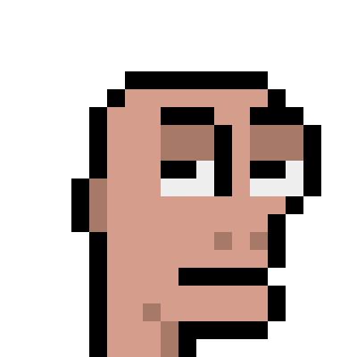
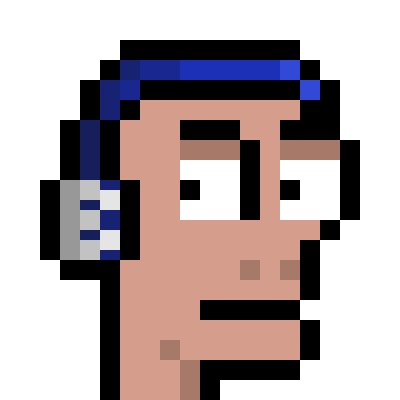
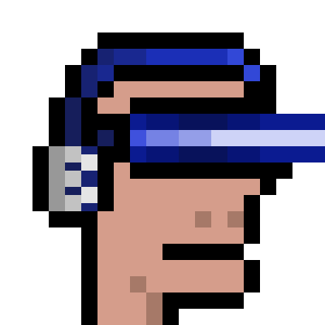
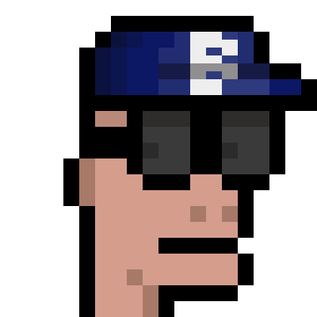
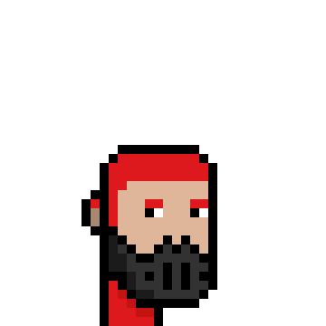

Live now
Kraken USDT 4H scanner. Discord alerts. API + Supabase tracking. One open signal per pair.
Base blockchain · Pixel art · Trading protocol
A creator-owned pixel universe. Characters, stories, and collectibles on one side. Moe AI — a live 4H market-structure scanner — on the other.

Stay based
Product
Not a signal group. Phase 1 is a 4H break-of-structure scanner with Fibonacci entries. The long-term product is an explainable trading protocol on Base for humans and agents.
Kraken USDT 4H scanner. Discord alerts. API + Supabase tracking. One open signal per pair.
Full breakout leg with wicks. Entry 0.50–0.786. SL at leg origin. TP at Fib 1.59. Min RR 1.1.
More live data. Holder access. Agent docs. Signal Registry on Base Sepolia. Dashboard on this domain.
Sample is still small. Signals are not financial advice. Always DYOR.
Collectibles
2222 animated pixel pieces on Base. Mint paused until product access is ready. Both collections get full scanner and dashboard access.
222 Bald Moe fragments + 21 Singular 1/1s. Art ready. Not minted yet. Genesis also gets alpha tests and future free mints.





Moerverse
Moerverse is built around original characters, memory, and imagination. NFTs are part of it. They are not the whole thing.
Pixel art, animation, and product are made by one builder. The site, scanner, and collections stay under one name: Based Moer.